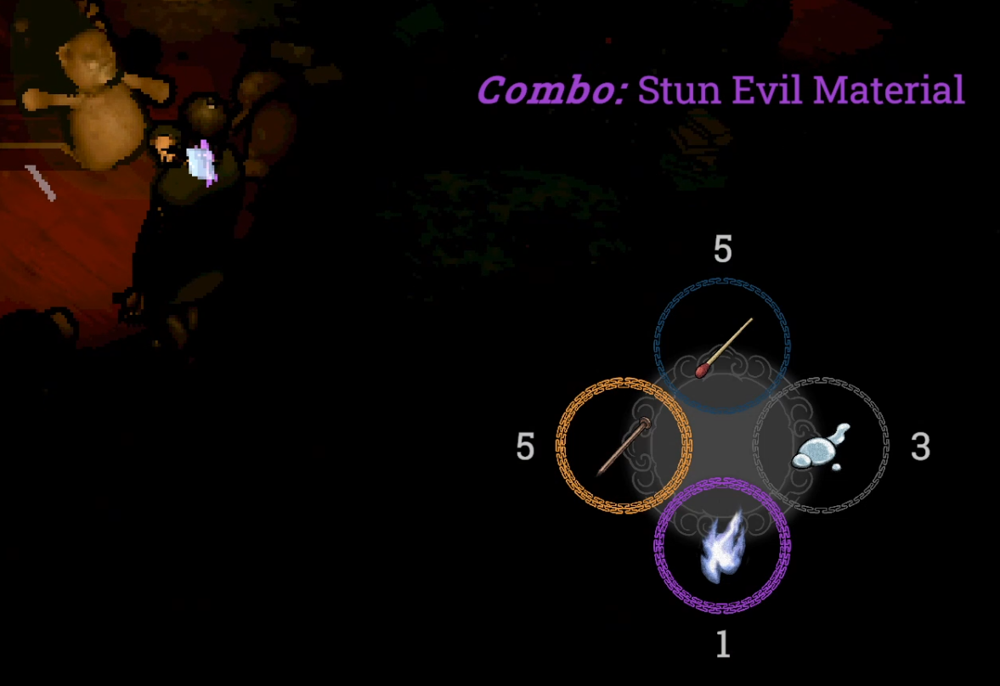
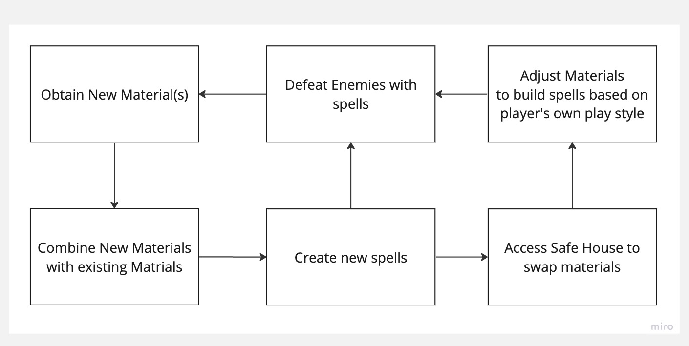
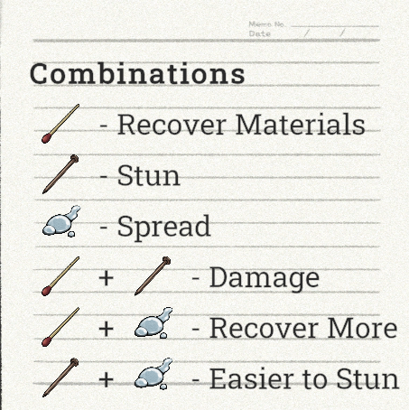
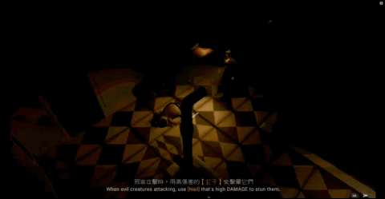
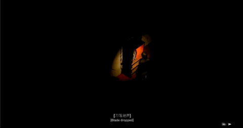
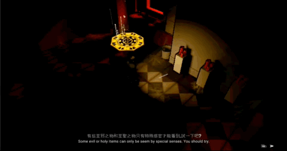
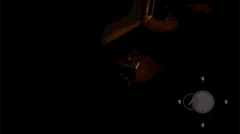
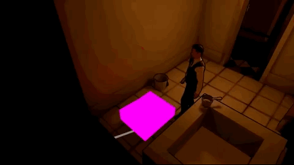
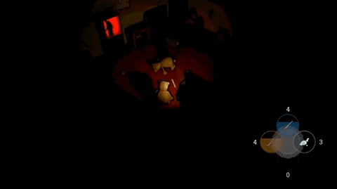

Epitaph 1997
- Action RPG, Unity
- Taoist: Inspired by Chinese Taoist Exorcism, blending Eastern Horror with Spell-Craft combat
- Showcase: Highlighted in the NYU Game Center 2022 end-of-year showcase
- 01Project Management: Coordinated the game design team to ensure cohesive development
- 02Combat System Design: Developed the spell-craft combat mechanics, balancing challenge and player agency
- 03Level Design: Crafted environments optimized for a 2.5D camera perspective, ensuring intuitive navigation and guiding players through puzzles and dark areas without confusion
- 04Narrative & Gameplay Balancing: Separated investigation and combat, expanded tutorials, and integrating guiding voice lines to ease player learning and immersion
Spell-Craft Combat System


Concept: Inspired by Taoist rituals, specifically the Wuxing (Five Elements), transforming traditional practices into dynamic gameplay.
Materials & Spells:
- Standard materials: Basic functionality, often requiring combinations
- Ghost-dropped materials: Powerful on their own, adding unique advantages
Craft Spells: Players collect materials from levels or defeated enemies, and combine one or two to craft spells with distinct effects.


Examples:
- Copper nail: Stuns enemies
- Matchstick: Gathers materials
- Copper nail + Matchstick: Creates damaging spell
Core Gameplay Loop:
- Collection: Gather materials from the environment and defeated enemies
- Experimentation: Combine materials to discover new spells
- Execution: Use crafted spells to defeat enemies and gather more resources
Four Main Iterations
First Build

Final Build
- Enhanced Material Combinations: Improved accessibility and clarity, empowering players to make informed decisions when crafting spells
- Automatic Material Collection: Players now automatically pick up ghost-dropped materials, streamlining resource management
- Auto-Aim Feature: Introduced to improve combat precision and reduce frustration during engagements
- Balanced Movement Speeds: Reduced player speed to discourage frequent escapes while moderating enemy speed to give players time to strategize
Level Design Evolution

Initial Layout:
Started with a linear layout, focusing on straightforward player progression for prototyping. This approach prioritized clarity but lacked depth in exploration and player agency.


Iterated Layout:
Transitioned into a basic circular layout, introducing loops and connections to improve navigation and replayability. Early attempts at encouraging exploration and dynamic player routes.

Final Implementation:
Further refined the circular layout to include logical connections and distinct zones for puzzles, combat, and exploration. Improved navigation flow and introduced multiple pathways for greater player freedom and strategic gameplay. Added environmental storytelling, puzzles, checkpoints and intuitive lighting to guide players seamlessly through the level.
Balancing Combat & Narrative
Players found the combat system engaging but struggled with its complexity in single sessions, especially under the pressures of intense horror ambience.


From Tutorial to Boss Fight
Key Adjustments:
- Gradual introduction of mechanics with repeated reinforcement.
- Expanded combat tutorials for better player understanding.
- Streamlined spell-craft system for quicker access during combat.


Isolated Narrative Experience from Combat
- Separated combat and investigation to reduce cognitive load.
- Retained key narrative moments, like investigating Lord Magistrate's crimes, ensuring the story drives player engagement without overwhelming them.
Player Perspective

First Build

Final Build
In later builds, we adopted a more isometric camera perspective for players. This viewpoint offers a broader visual range on the screen, making environmental puzzles and enemy encounters easier to manage.
Narrative System Iteration

Removed Dialogue Selection

"Police Sense"
- Removed the dialogue selection system to improve game pacing, as it didn't fit well in the vertical slice format.
- Introduced "Police Sense" mechanic as a more intuitive way of exploring the environment and discovering clues.